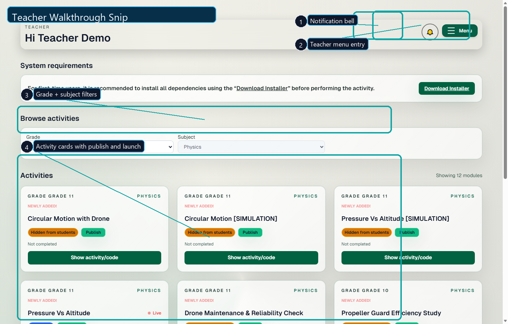
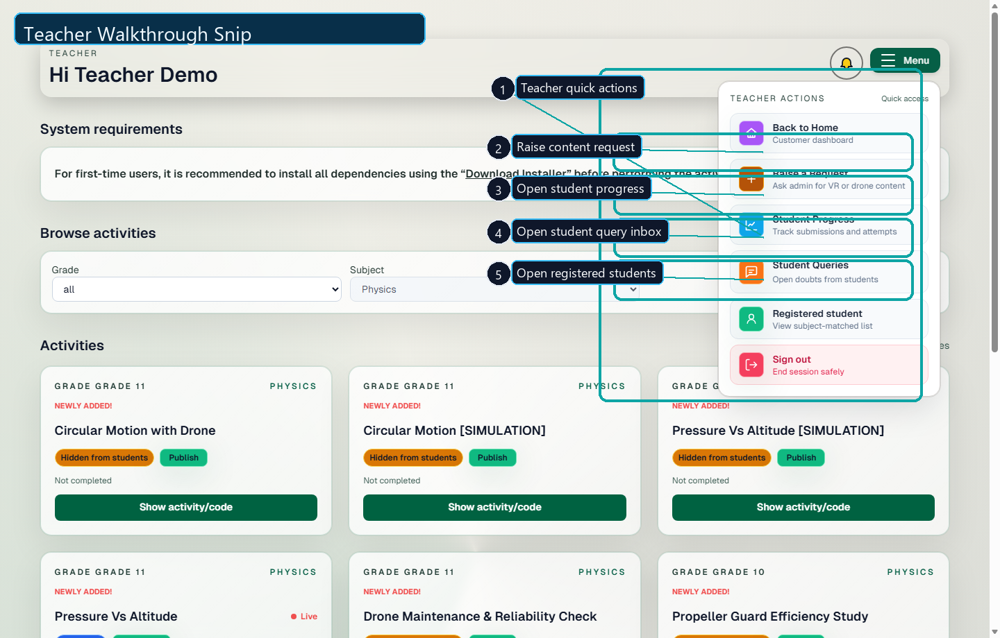
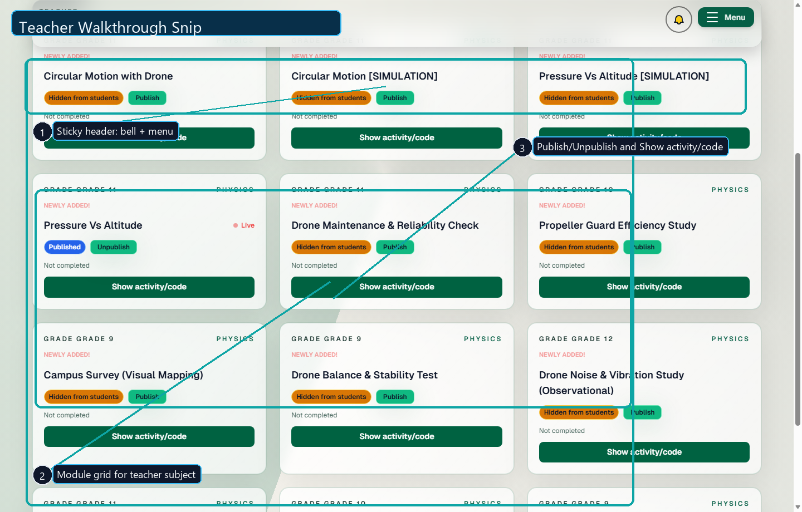
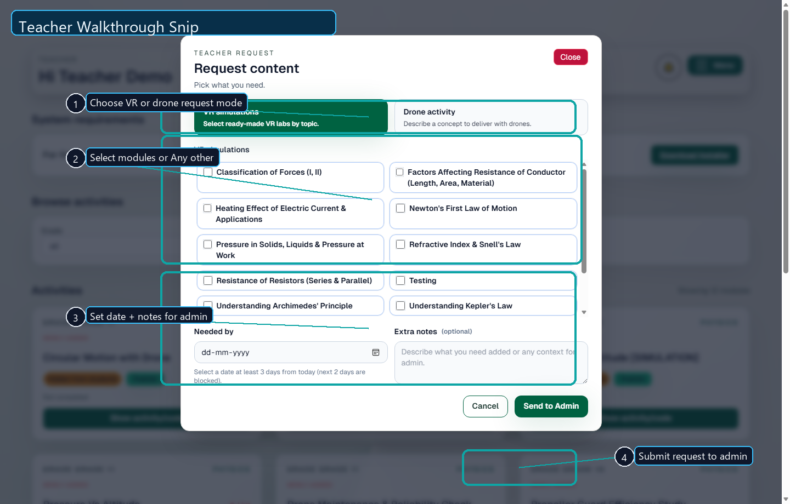
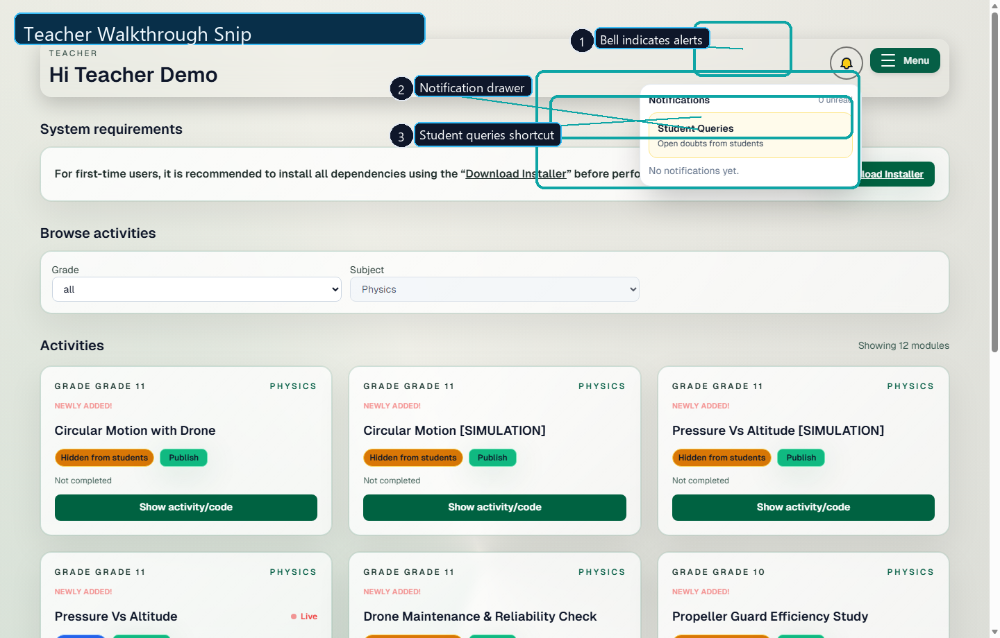
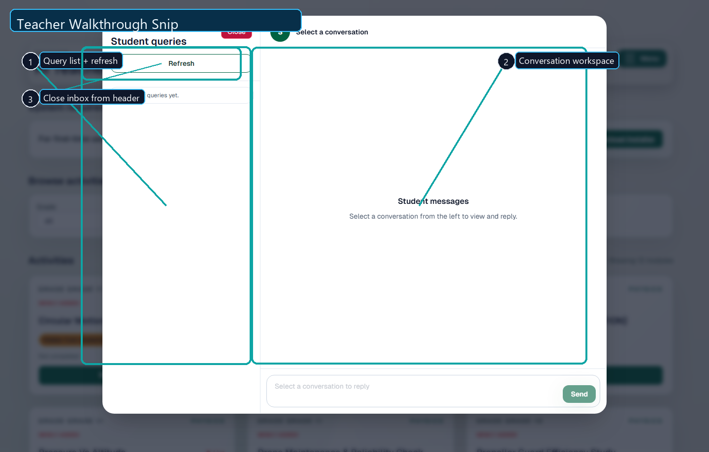
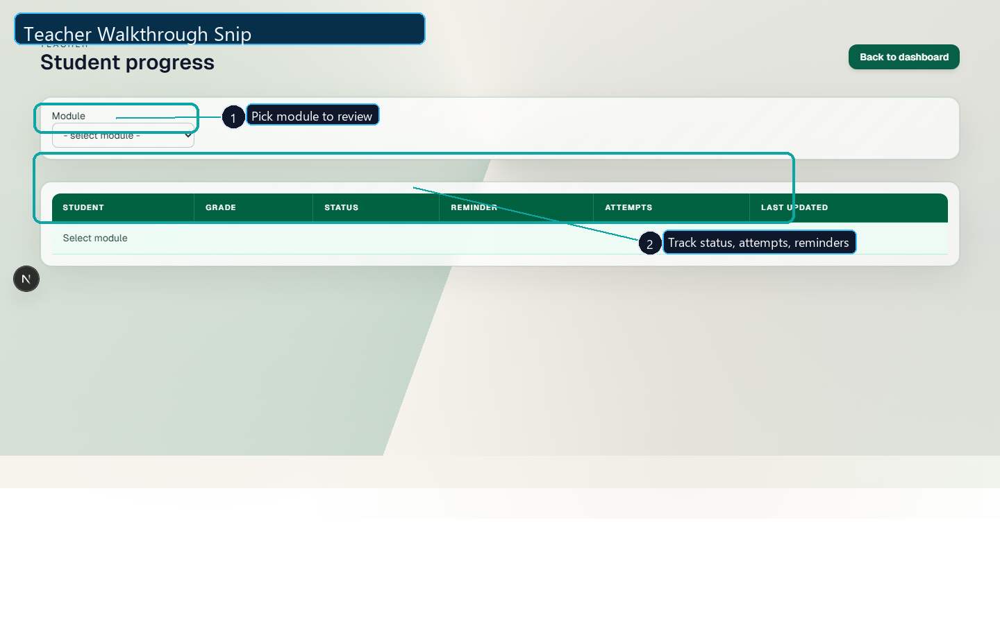
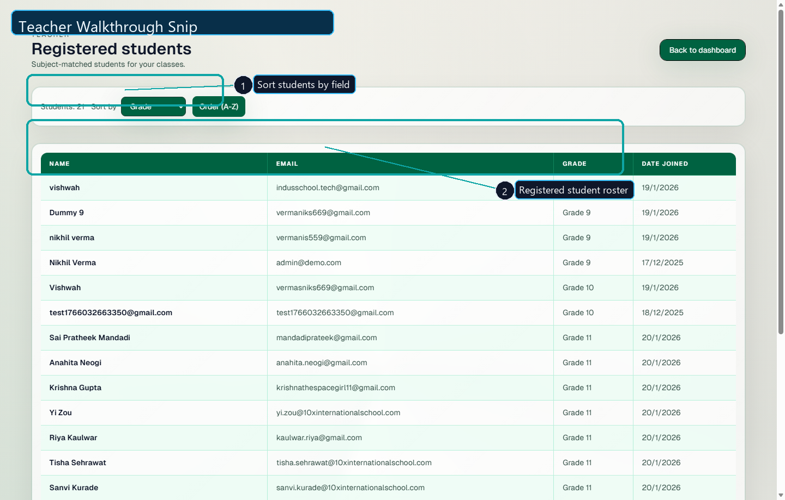

AerohawX Teacher Enablement
Teacher Operations Guide
Professional walkthrough of the complete teacher workflow: dashboard navigation, publishing, content requests, student query handling, progress tracking, and roster management.
Audience: Teachers
Format: Step-by-step with annotated snips
Prepared for classroom rollout
Slide 1
Teacher Dashboard Orientation
- Use the notification bell to monitor student alerts and query activity.
- Use the menu button for quick access to all teacher actions.
- Apply grade and subject filters before assigning or reviewing activities.
- Each activity card gives status visibility plus one-click launch.
Recommended daily start: open bell -> open menu -> review active modules.

Slide 2
Teacher Quick Menu
- Raise a Request: Ask admin for VR simulations or drone activities.
- Student Progress: Check completion status and attempts by module.
- Student Queries: Open and respond to learner doubts.
- Registered Students: View the teacher-matched roster.
Keep this as the primary command center for teacher operations.

Slide 3
Activity Cards: Publish + Launch
- Use Publish to make a module visible to students.
- Use Unpublish when a module needs revision before class.
- Use Show activity/code to open execution assets and instructions.
- Use status chips to verify visibility state before assigning work.
Best practice: publish only validated modules one day before class to avoid confusion.

Slide 4
Raise Content Requests to Admin
- Select request type: VR simulation or Drone activity.
- For VR, select required modules or choose Any other.
- Add required date and context notes for curriculum alignment.
- Submit using Send to Admin.
Scheduling rule: custom/Any-other VR requests require longer lead time than standard module requests.

Slide 5
Notifications and Query Alerts
- Open bell icon to access notification center.
- Use Student Queries shortcut for direct jump to inbox.
- Review unread badges and clear items as needed.
Check this panel before each class and at day-end for quick SLA response.

Slide 6
Student Query Inbox and Replies
- Left pane: student query queue with refresh support.
- Center pane: full conversation context per selected query.
- Reply from the bottom composer to continue guidance thread.
- Close inbox after action completion.
Response quality tip: reply with next action, expected output, and checkpoint deadline.

Slide 7
Student Progress Monitoring
- Select a module from the dropdown to load module-wise progress.
- Track submission status, attempts, and latest update for each learner.
- Use reminder controls to nudge non-submitters.
Weekly reporting tip: capture this view after each assessment cycle.

Slide 8
Registered Students View
- Use sort controls to organize by name, grade, or join date.
- Verify subject-matched enrollment before assigning activities.
- Use this page for attendance and communication readiness checks.
Pre-class checklist: validate roster on Monday and after each new registration.

Slide 9
Daily Operating Checklist
Before Class
- Review unread notifications and student queries.
- Verify required modules are in Published state.
- Open activity/code for the first session run-through.
During Class
- Use module cards to launch activities quickly.
- Mark issues and collect missing-content needs.
- Use query inbox for immediate support follow-ups.
After Class
- Open Student Progress and review submissions.
- Send reminders to pending students.
- Raise admin requests for next class improvements.
Weekly Governance
- Audit roster on Registered Students page.
- Re-check publish state for upcoming modules.
- Archive unresolved queries for escalation.